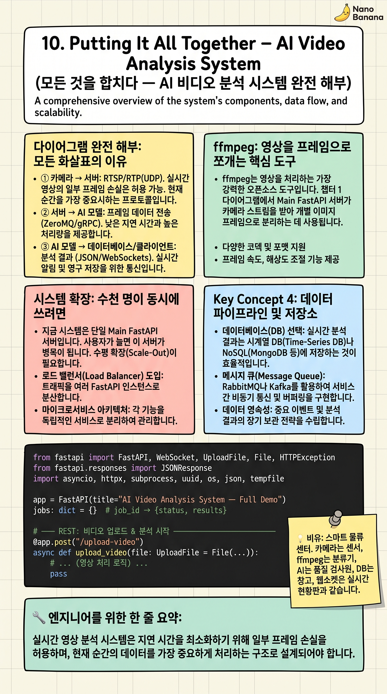

Putting It All Together – AI Video Analysis System

🎯 학습 목표
- AI 비디오 분석 시스템 다이어그램의 모든 요소를 설명할 수 있다
- 각 통신 지점에서 어떤 프로토콜이 왜 쓰이는지 근거와 함께 설명할 수 있다
- 시스템을 더 많은 사용자가 사용할 수 있도록 확장하는 방법을 제안할 수 있다
- 이 코스에서 배운 모든 개념을 하나의 그림으로 연결할 수 있다
지금까지 9개 챕터에서 HTTP, REST, FastAPI, WebSocket, RTSP, RTP, Wi-Fi, Bluetooth, WebRTC를 각각 배웠습니다. 이 마지막 챕터에서는 이 모든 개념이 하나의 실제 시스템에서 어떻게 함께 작동하는지 전체 그림을 그립니다.
챕터 1에서 처음 봤던 시스템 다이어그램으로 돌아갑니다. 브라우저 → Main FastAPI(포트 8000) → 3개 Worker의 흐름. 이제 각 화살표가 어떤 프로토콜을 쓰고 왜 그 프로토콜을 선택했는지 명확하게 설명할 수 있습니다.
마지막 섹션에서는 이 시스템에 수천 명이 동시에 접속하면 어떻게 되는지, 어떻게 확장하는지를 논의합니다. 이 코스를 마치고 나면 여러분은 시스템 아키텍처 다이어그램을 처음 보는 사람이 아닌, 각 선택의 이유를 이해하는 엔지니어가 됩니다.
핵심 내용
다이어그램 완전 해부: 모든 화살표의 이유
① 카메라 → 서버: RTSP/RTP(UDP). 실시간 영상의 일부 프레임 손실은 허용 가능. 현재 순간을 보여주는 것이 중요. Wi-Fi 5GHz 또는 유선 이더넷으로 전송(충분한 대역폭 필수).
② 브라우저 → Main FastAPI: HTTPS REST(TCP). 파일 업로드, 분석 요청. 파일 1바이트도 손실 불가. POST /analyze 엔드포인트. 멀티파트 폼 데이터로 비디오 파일 전송.
③ Main FastAPI ↔ 브라우저: WebSocket(TCP). AI가 분석하는 동안 진행 상황을 실시간 스트리밍. '10% 완료', '워커 A 결과: ...' 같은 텍스트 메시지. 분석 텍스트는 1자도 빠지면 안 됨.
④ Main FastAPI → 3개 Worker: HTTP(TCP)/async httpx. 내부 네트워크에서 동기화된 요청. asyncio.gather()로 3개 요청 동시 발사. 가장 느린 워커 시간만큼만 기다림(병렬화 이득).
⑤ Worker들의 GPU: Qwen 모델(27B, 9B, 4B)이 각각 다른 GPU에서 프레임 분석. 동일 입력에 3개 결과 → 다수결 또는 앙상블로 신뢰도 향상.
ffmpeg: 영상을 프레임으로 쪼개는 핵심 도구
ffmpeg는 영상을 처리하는 가장 강력한 오픈소스 도구입니다. 챕터 1 다이어그램에서 Main FastAPI 서버가 ffmpeg를 사용해 비디오를 '여러 장의 사진(프레임)'으로 추출합니다.
ffmpeg -i input.mp4 -vf fps=1 frame_%03d.jpg 명령으로 1초마다 1장의 프레임 이미지를 추출합니다. AI 모델은 전체 영상 대신 이 이미지들을 분석합니다. 30분 영상이면 1800장의 이미지가 됩니다.
Python에서는 subprocess.run(['ffmpeg', ...])으로 ffmpeg를 호출하거나, OpenCV(cv2.VideoCapture)로 직접 프레임을 읽습니다. 챕터 7의 RTSP 스트림 처리도 ffmpeg나 OpenCV를 통합니다.
시스템 확장: 수천 명이 동시에 쓰려면
지금 시스템은 단일 Main FastAPI 서버입니다. 사용자가 늘면 이 서버가 병목이 됩니다. 수평 확장(Horizontal Scaling): Main FastAPI 서버를 여러 대 띄우고 앞에 로드 밸런서를 둡니다. Nginx, AWS ALB가 트래픽을 여러 서버에 분산합니다.
WebSocket 확장 문제: 사용자 A의 WebSocket이 서버 1에 연결되고, 서버 2가 분석 결과를 얻었을 때 서버 2가 사용자 A에게 직접 전달할 수 없습니다. Redis Pub/Sub로 해결: 서버 2가 Redis에 결과를 발행(publish)하면, 서버 1이 구독(subscribe)하여 사용자 A에게 전달합니다.
작업 큐(Task Queue): 비디오 분석처럼 시간이 걸리는 작업은 Celery + Redis/RabbitMQ 큐를 사용합니다. 요청이 들어오면 즉시 job_id를 반환하고, 백그라운드 워커가 큐에서 작업을 꺼내 처리합니다. 서버 재시작에도 작업이 유실되지 않습니다.
💡 비유로 이해하기
이 AI 비디오 분석 시스템은 현대적인 스마트 물류 센터와 같습니다. 카메라(CCTV, RTSP/RTP)가 물류 센터를 감시합니다. 브라우저(고객)가 '이 짐의 상태를 분석해줘'라고 요청합니다(REST API/HTTPS).
중앙 관제실(Main FastAPI)이 요청을 받아 세 팀(Worker A, B, C)에게 동시에 분석을 맡깁니다. 각 팀이 작업하는 동안 관제실은 '현재 10% 진행'이라는 실시간 업데이트를 고객에게 계속 전달합니다(WebSocket). 가장 느린 팀이 끝나면 세 팀의 결과를 모아 고객에게 최종 답변을 보냅니다.
물류 센터가 커져 트럭이 늘어나면(트래픽 증가), 게이트를 늘리고(로드 밸런서), 창고를 더 만들고(수평 확장), 작업 일정표를 공유 게시판에 올립니다(Redis 메시지 큐). 각 확장 요소가 실제 시스템 확장 기술과 정확히 대응됩니다.
💻 코드 예시
챕터 5의 FastAPI 코드와 챕터 6의 WebSocket을 합쳐, 비디오를 업로드하면 분석 진행 상황을 실시간 스트리밍하는 완성된 시스템을 구현합니다. ffmpeg 프레임 추출과 비동기 Worker 병렬 호출이 포함됩니다.
from fastapi import FastAPI, WebSocket, UploadFile, File, HTTPException
from fastapi.responses import JSONResponse
import asyncio, httpx, subprocess, uuid, os, json, tempfile
app = FastAPI(title="AI Video Analysis System — Full Demo")
jobs: dict = {} # job_id → {status, results}
# ── REST: 비디오 업로드 & 분석 시작 ─────────────────────────
@app.post("/analyze")
async def start_analysis(video: UploadFile = File(...),
prompt: str = "이 영상을 설명해주세요"):
job_id = str(uuid.uuid4())
jobs[job_id] = {"status": "queued", "results": [], "prompt": prompt}
# 비디오 파일을 임시 저장
with tempfile.NamedTemporaryFile(delete=False, suffix=".mp4") as tmp:
tmp.write(await video.read())
tmp_path = tmp.name
# 백그라운드에서 분석 시작 (즉시 job_id 반환)
asyncio.create_task(_analyze(job_id, tmp_path, prompt))
return {"job_id": job_id, "status": "queued",
"ws_url": f"ws://localhost:8000/ws/{job_id}"}
# ── WebSocket: 실시간 진행 상황 스트리밍 ────────────────────
@app.websocket("/ws/{job_id}")
async def progress_stream(ws: WebSocket, job_id: str):
await ws.accept()
try:
while True:
job = jobs.get(job_id)
if not job:
await ws.send_json({"error": "job not found"}); break
await ws.send_json(job) # 현재 상태 전송
if job["status"] in ("done", "error"):
break
await asyncio.sleep(0.5) # 0.5초마다 업데이트
except Exception:
pass
# ── 내부: ffmpeg → Worker 병렬 호출 ─────────────────────────
async def _analyze(job_id: str, video_path: str, prompt: str):
try:
# 1) ffmpeg로 1초마다 프레임 추출
jobs[job_id]["status"] = "extracting_frames"
frame_dir = tempfile.mkdtemp()
subprocess.run(
["ffmpeg", "-i", video_path, "-vf", "fps=1",
f"{frame_dir}/frame_%03d.jpg", "-y", "-loglevel", "quiet"],
check=True
)
frame_count = len(os.listdir(frame_dir))
jobs[job_id]["frame_count"] = frame_count
# 2) 3개 워커에 동시 요청 (챕터 5 asyncio.gather 패턴)
jobs[job_id]["status"] = "analyzing"
worker_urls = [
"http://worker-a:8001/infer", # Qwen 27B
"http://worker-b:8002/infer", # Qwen 9B
"http://worker-c:8003/infer", # Qwen 4B
]
async with httpx.AsyncClient(timeout=120) as client:
tasks = [
client.post(url, json={"prompt": prompt,
"frame_dir": frame_dir})
for url in worker_urls
]
responses = await asyncio.gather(*tasks, return_exceptions=True)
results = []
for i, r in enumerate(responses):
if isinstance(r, Exception):
results.append({"worker": i+1, "error": str(r)})
else:
results.append({"worker": i+1, "answer": r.json()["answer"]})
jobs[job_id].update({"status": "done", "results": results})
except Exception as e:
jobs[job_id].update({"status": "error", "error": str(e)})
finally:
os.unlink(video_path) # 임시 파일 정리
# 실행: uvicorn main:app --reload --port 8000전체 흐름: POST /analyze → job_id 즉시 반환 + 백그라운드 분석 시작 → 클라이언트는 ws:// 연결 → _analyze가 ffmpeg 프레임 추출 후 3개 워커에 asyncio.gather로 동시 요청 → 결과 jobs 딕셔너리 업데이트 → WebSocket이 0.5초마다 현재 상태를 push. 이것이 챕터 1 다이어그램의 완전한 구현입니다.
🏭 현업에서의 평가
✅ 시니어가 보는 것
- 각 프로토콜 선택의 이유를 근거와 함께 설명 (왜 WebSocket인가, 왜 UDP인가)
- 단일 서버 → 다중 서버 확장 시 발생하는 문제(WebSocket 세션, 작업 큐)와 해결책
- ffmpeg, asyncio.gather, Redis 같은 실제 도구 사용 경험
⚠️ 레드 플래그
- 모든 통신을 REST로만 설계 (실시간 스트리밍 상황에서 WebSocket을 고려하지 않음)
- 수평 확장 시 WebSocket 세션 문제를 모르거나 해결책을 제시하지 못함
🎤 예상 인터뷰 질문
- 이 AI 비디오 분석 시스템에서 각 통신 구간에 어떤 프로토콜을 사용하고 왜 그 선택을 했나요?
- 동시 사용자가 10명에서 10,000명으로 늘어난다면 이 시스템을 어떻게 확장하겠습니까?
✨ 핵심 요약
카메라→서버: RTSP/UDP
실시간 영상. 일부 프레임 손실 허용, 현재 순간이 중요
브라우저→서버: REST/HTTPS
파일 업로드와 분석 요청. 데이터 무결성 필수
서버→브라우저: WebSocket
분석 진행 상황 실시간 push. 결과 텍스트는 손실 불가
서버→Worker: async httpx
asyncio.gather로 3개 워커 동시 호출 → 병렬 처리로 속도 향상
ffmpeg = 프레임 추출기
비디오를 이미지 시퀀스로 변환. AI 모델이 이미지 단위로 분석
수평 확장
로드 밸런서 + 다중 서버 + Redis Pub/Sub으로 WebSocket 세션 공유
이 코스의 핵심
프로토콜 선택은 '데이터 특성(무결성 vs 실시간성)'에 따라 결정된다